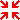
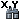

Введение в Kosmo¶
Kosmo Desktop — это ГИС-приложение с понятным пользователю интерфейсом, которое позволяет просматривать и редактировать пространственные данные в различных форматах (базы данных, векторные, растровые), а также проводить их анализ.
В данном “введении” описано, как:
- запустить приложение;
- загрузить слои из файла, базы данных и OGC-сервисов;
- перемещаться по карте;
- менять оформление слоёв.
Запуск Kosmo Desktop¶
Чтобы запустить приложение, необходимо выполнить следующие шаги:
В меню Пуск выберите опцию
Приложению потребуется несколько секунд, чтобы запуститься (во время загрузки появится экран-заставка).

В диалоговом окне “Приветствие” выберите опцию (1) и нажмите кнопку Ok (2)

В диалоговом окне “Пространственная система координат” нажмите кнопку ....

Выберите опцию EPSG в поле-списке “Пространственная система координат” (1), введите текст 4326 в текстовое поле, затем нажмите кнопку Search (2).
Выберите систему координат EPSG:4326, WSG4 (3) и нажмите кнопку Ok (4)

Нажмите кнопку Ok еще раз, чтобы выбрать подгруженную систему координат. Окно вида будет использовать при запуске проекцию EPSG:4326 как базовую.
Tip
В заголовке окна Вид возле имени вы сможете увидеть выбранную для данного Вида проекцию.
Kosmo Desktop — основное окно¶
Основное окно Kosmo состоит из следующих частей:

Основное меню
Панель инструментов
Дерево слоёв
Дерево, содержащее категории и слои, подгруженные в данном Виде
Карта
Строка состояния
Показывает пользователю сообщения программы.
Координаты текущего положения курсора
Подгрузка слоёв¶
Файлы¶
Для начала подгрузим несколько слоёв из пробных данных, входящих в OSGeo-Live DVD:
Выберите опцию View > Load Dataset... или нажмите кнопку в виде зелёного плюса, находящуюся на основной панели инструментов.
В списке Format выберите Shapefile (1).
Выберите
10m_admin_0_countries.shp, находящийся в каталоге/usr/local/share/data/natural_earth(2).Нажмите кнопку Ok для загрузки шейпфайла (3).

В дереве слоёв поставьте флажок, чтобы сделать слой видимым, при необходимости щёлкнув правой кнопкой мыши (ПКМ) на папке Working.
Ещё раз выберите опцию View > Load Dataset... или нажмите кнопку в виде зеленого плюса, находящуюся на основной панели инструментов.
В списке Format выберите Image file (1).
Выберите
HYP_50M_SR_W.tif, который расположен в каталоге/usr/local/share/data/natural_earth/HYP_50M_SR_W(2)Нажмите кнопку Ok для загрузки файла изображения (3).

В дереве слоёв поставьте флажок, чтобы сделать слой видимым.
Вы можете увидеть, что порядок отрисовки слоёв начинается от нижнего слоя к верхнему. Перетаскивая слои, измените их порядок для удобного отображения данных.

Note
OSGeo-Live содержит примеры данных, которые находятся в следующих директориях:
~/data( ярлык/usr/local/share/dataили/home/user/data)/usr/local/share/openjump/data
Вы можете попробовать подгрузить больше данных из этих директорий. Помните, что при выборе данных необходимо указать их правильный формат в списке Format.
Tip
Чтобы добавить все изображения в директории как уникальный слой, выберите нужную директорию в диалоговом окне Load Dataset.... Kosmo подгрузит все изображения в виде мозаики.
Базы данных¶
Ниже показано, как подключить базу данных.
Выберите опцию View > Load Dataset... или нажмите кнопку в виде зеленого плюса, которая находится на основной панели инструментов
В списке Format, выберите Database (1)
Заполните поля “Хост”, “Порт”, “Имя базы данных”, “Имя пользователя” и “Пароль” следующим образом:
- Хост: localhost
- Порт: 5432
- Имя базы данных: natural_earth
- Имя пользователя: user
- Пароль: user
Нажмите кнопку Connect, чтобы подгрузить таблицы базы данных natural_earth (2).
Выберите таблицу 10m_populated_places_simple (3).
Нажмите кнопку Ok , чтобы загрузить выбранную таблицу (4).

В дереве слоёв поставьте флажок, чтобы сделать слой видимым.

Сервисы OGC¶
Запустите GeoServer WMS , входящий в состав OSGeo-Live DVD, выбрав опцию (либо зайдите в папку Web Services и дважды кликните иконку “Запустить Геосервер”).
Нажмите кнопку Load SDI Service (IDE) на панели инструментов, чтобы открыть мастер настройки.
На панели Select SDI service type выберите опцию WMS Service (1) и нажмите кнопку Next (2).

В текстовое поле Select Uniform Resource Locator (URL), введите URL http://localhost:8082/geoserver/ows?VERSION=1.1.1 (1), а затем нажмите кнопку Connect (2).
Если соединение прошло успешно, то нажмите кнопку Next (3).

Выберите слой North America Sample Imagery (1); нажмите кнопку > (2), чтобы переместить изображение в правую часть списка, затем нажмите кнопку Next (3).

Не изменяйте значения в появившемся окне, нажмите кнопку Finish (1) для загрузки слоя.

В списке слоёв поставьте флажок, чтобы сделать слой видимым.
Выделите слой в списке слоёв, нажмите кнопку Zoom To Layer,чтобы отцентрировать карту со слоем WMS.
Поменяйте порядок подгруженных слоёв, перетаскивая их так, чтобы растровый слой HYP_50M_SR_W оказался внизу.

Note
Kosmo по умолчанию содержит список серверов WMS (большая часть из них испанские). Если вы подключены к сети Интернет, то вы сможете использовать их, как описано в примере, используя локальный сервер.
Инструменты навигации по карте¶
Вы можете контролировать положение карты, используя инструменты навигации, расположенные на основной панели интрументов.
- Инструменты масштабирования
- Когда вы начинаете новую сессию, этот инструмент будет выбран по умолчанию.
- Используйте левую кнопку мыши (ЛКМ), чтобы приблизиться до необходимого уровня к выбранной точке на карте.
- Используйте правую кнопку мыши (ПКМ), чтобы отдалиться до необходимого уровня от выбранной точки на карте.
- Чтобы увеличить какую-либо территорию на карте, выделите прямоугольную область, удерживая нажатой ЛКМ.
 Перемещение
Перемещение
- Позволяет перемещаться по карте без изменения её масштаба.
- Зажмите ЛКМ, затем переместите мышь в желаемое место и отпустите клавишу.
- Вернуться к предыдущему виду
- Возвращает к предыдущему виду, хранящемуся в истории (при его наличии).
 Вернуться к следующему виду
Вернуться к следующему виду
- Возвращает к следующему виду, хранящемуся в истории (при его наличии).
- Перейти к просмотру всех объектов
- Изменяет вид карты таким образом, что все объекты видимых слоёв отображаются на карте.
- Перейти к выбранному слою
- Изменяет вид карты таким образом, что все объекты выбранного слоя отображаются на карте.
- Перейти к выбранным объектам
- Изменяет вид карты, отображая на ней все выбранные объекты
-  Переместить по щелчку
- Центрирует карту в точке щелчка ЛКМ без изменения масштаба
-  Координатная локализация
- Центрирует карту по ввёденным координатам X и Y (широта/долгота)
Кроме указанных инструментов, можно использовать колесо мыши для плавного приближения/отдаления от точки указателя.
Note
Если какой-либо инструмент или опция меню недоступны, можно поместить курсор на кнопку/опцию, чтобы увидеть всплывающую подсказку.
Оформление¶
В этом разделе описано, как изменить оформление слоя, используя ранжирование, на основе поля country population:
В дереве слоёв выберите 10m_admin_0_countries.
Щелкните по нему ПКМ и выберите опцию Simbology > Change Styles....
Выберите Colour theming.
Сделайте активными опции Enable colour theming и by range (1).
Выберите POP_EST как Attribute (2), “8” как Range count (3) и RYG (Color Brewer) как Color schema (4).
Нажмите кнопку Ok , чтобы применить изменения (5).

Слой поменяет своё оформление:

Что стоит попробовать?¶
- Используйте продвинутый редактор стилей (Symbology > Advanced style editor...) для создания сложных стилей.
- Используйте редактор запросов Query wizard для выбора объектов, удовлетворяющих заданному условию.
- Активируйте режим редактирования и используйте доступные инструменты редактирования.
- Сгенерируйте набор правил топологии для слоя и попробуйте его отредактировать.
- Активируйте расширения, которые являются частью приложения, обратите внимание на новые доступные инструменты.
Что дальше?¶
Документация и видео-материалы доступны на сайте Kosmo: http://www.opengis.es/index.php?lang=en